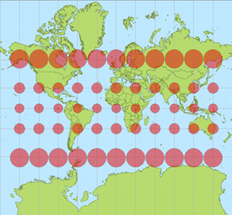

25 aprile, 2010 | di Alessio Di Lorenzo
Tempo fa scrissi un articolo su ArcGIS Server 9.3 soffermandomi sui servizi REST e le API Javascript ed accennando al fatto che ESRI mette a disposizione delle estensioni per le API di Google Maps e per quelle di Bing Maps.
Ultimamente ho lavorato un po’ con le prime e ne ho avuto complessivamente una buona impressione. Tuttavia, durante lo sviluppo, ho riscontrato un problema nella misurazione delle distanze e delle aree che merita di essere messo in evidenza, soprattutto perché gli esempi della documentazione ESRI non lo fanno a dovere ed anzi, secondo me, risultano leggermente fuorvianti.
Terminata la premessa, prima di andare avanti con l’articolo, voglio ringraziare Domenico Ciavarella, che mi ha dato un supporto fondamentale per arrivare ad una soluzione che altrimenti starei ancora cercando.
La proiezione di Google Maps

Effetto di distorsione delle aree
Google Maps, Bing Maps ed altri provider (come OpenStreetMap, Yahoo e, di recente, la stessa ESRI) utilizzano una proiezione nota come Spherical Mercator, derivata dalla proiezione di Mercatore. Il codice EPSG ufficiale è 3785, anche se prima della sua definizione molti software hanno utilizzato l’ufficioso 900913. L’identificativo per i software ESRI, tra cui ovviamente ArcGIS Server, è invece 102113.
Questa proiezione considera la Terra come una sfera e consente di includerne completamente la superficie all’interno di un quadrato.
Quando però si rappresenta una superficie curva su di un piano, come un foglio di carta o il monitor di un computer, si introducono delle deformazioni. In questo caso, man mano che ci si allontana dall’equatore le aree cartografate subiscono un pesante stiramento sia in senso verticale che orizzontale e diventano, quindi, via via più esagerate verso i poli (la Groenlandia, per esempio, sembra più grande dell’Africa). Questa proiezione evidentemente non è fatta per minimizzare la deformazione delle aree (la proiezione di Mercatore è conforme infatti), ma risulta vantaggiosa per l’uso attraverso il web perché consente di applicare un modello efficiente di tassellamento e caching.
Il problema…
Ammettiamo di voler creare un’applicazione di webmapping con le sopracitate estensioni delle API Javascript di ArcGIS Server per Google Maps.
La prima cosa da fare è creare un mapservice in grado di esporre i nostri dati spaziali con la medesima proiezione delle basi cartografiche di Google. Come spiegato nel post dedicato ad ArcGIS Server (linkato all’inizio di questo articolo) un mapservice “aggancia” e pubblica un progetto redatto in ArcMap (il classico .mxd), quindi basta assegnare al dataframe del progetto il sistema di riferimento appropriato (che si trova nella lista dei sistemi proiettati, alla voce WGS 84 Web Mercator, con identificativo 102113), salvare il tutto e pubblicarlo con ArcGIS Server. Niente di difficile insomma.
Focalizziamoci ora sullo sviluppo del client: tra i tanti strumenti che oggi ci si aspetta di trovare in una applicazione WebGIS ci sono i “righelli” che consentono di disegnare spezzate e poligoni e di misurarne poi lunghezza ed area. ESRI lo sa, ed ha giustamente incluso un esempio per mostrare come creare questi tool nella documentazione delle sue API.
Abbiamo detto però che l’uso della proiezione Spherical Mercator provoca una deformazione crescente man mano che ci si spinge verso i poli e, tracciando una spezzata per misurare un oggetto al suolo di dimensioni note, come uno stadio di calcio, ci si accorge dell’inghippo: è più lungo di quanto dovrebbe essere (circa 146 metri invece di 105-110).
L’esempio fornito da ESRI non considera la deformazione e può indurre gli sviluppatori all’errore. E’ vero che una persona con le adeguate conoscenze di geomatica può arrivare ad intuire il rischio insito nell’uso della proiezione di Google, ma è anche vero che il webmapping è terra di confine tra “gissologi” e sviluppatori informatici “puri”, senza particolari cognizioni tipiche del mondo gis. Non è per nulla detto, quindi, che chi sviluppa abbia i mezzi per immaginare il problema prima di averci sbattuto il muso e personalmente credo che aver pubblicato un esempio del genere nella documentazione ufficiale, senza neanche accennare alla questione della deformazione, sia stata una leggerezza.
…e la soluzione
Non molto tempo fa sul blog di ArcGIS Server è comparso un interessante post che mette in evidenza il problema della misurazione delle distanze e spiega come comportarsi per risolverlo.
Il servizio che in ArcGIS Server è incaricato di calcolare lunghezze ed aree, il Geometry Service, è in grado di svolgere diverse altre operazioni, tra cui la proiezione al volo delle geometrie.
Il “trucco” consiste nel riproiettare la geometria tracciata dall’utente nel sistema di riferimento più adatto alla zona mappata prima di effettuarne la misurazione e stampare a schermo il risultato.
Purtroppo lo snippet di codice fornito da ESRI è pronto all’uso solo per le API Javascript, mentre per le estensioni di Google Maps bisogna fare da soli e il discorso è un po’ meno semplice.
Al posto di questa funzione:
var sr = new esri.SpatialReference({wkid:32610});
geometryService.project([graphic], sr, function(projectedGraphic) {
geometryService.areasAndLengths(projectedGraphic, function(result) {
var perimeter = result.lengths[0];
var area = result.areas[0];
});
});
abbiamo bisogno di questa:
var geometryService = new esri.arcgis.gmaps.Geometry("http://sampleserver1.arcgisonline.com/ArcGIS/rest/services/Geometry/GeometryServer");
function calculateLengths() {
//Parametri per la riproiezione
var params = new esri.arcgis.gmaps.ProjectParameters();
params.geometries = [polyline];
params.inSpatialReference = 4326;
params.outSpatialReference = 3004; //Gauss-Boaga fuso Est
//Riproiezione e funzione di callback
geometryService.project(params, getLengths);
}
function getLengths(projectResults){
var url = "http://sampleserver1.arcgisonline.com/ArcGIS/rest/services/Geometry/GeometryServer/lengths";
var parameters = {
polylines: projectResults.geometries,
sr: 3004
};
esri.arcgis.gmaps.JSONRequest(url, test, parameters);
}
function test(result) {
alert(result.lengths[0]+" m");
}
Ho realizzato un veloce esempio che mostra i risultati ottenuti dal codice proposto da ESRI nella propria documentazione a confronto con quelli ottenuti dalla riproiezione con il Geometry Service e dalle semplici API di Google Maps, che hanno dei metodi propri per la misura di linee e poligoni.
Posted in Didattica | 4 Comments »
1 marzo, 2010 | di Alessio Di Lorenzo
Era da un po’ che avevo in mente di dedicare un articolo a jQuery, finalmente – complici l’influenza che mi ha tenuto a riposo forzato e l’ispirazione tratta da Linfiniti – sono riuscito nell’intento.
Per chi non lo sapesse, jQuery è un framework Javascript open source molto potente, caratterizzato da una sintassi snella e di facile comprensione.
Il framework è rilasciato con doppia licenza: MIT e GPL.
I motivi per usare jQuery nei propri progetti non mancano di certo: comunità attiva, disponibilità di molti temi e ottimi plugin, compatibilità e leggerezza sono i primi che mi vengono in mente.
In questo articolo vedremo come costruire una mappa online sfruttando jQuery UI e OpenLayers.
Il risultato della “fusione” è un client dotato di funzionalità di base come zoom, pan, misurazione delle distanze e vari layer di sfondo intercambiabili.
Si tratta, in pratica, di un template da cui partire per sviluppare applicazioni di web-mapping vere e proprie.

Per creare il client dell’esempio abbiamo bisogno di:
Ho già raccolto il tutto in questo archivio .zip. Qui dentro, oltre alle librerie, si trova la totalità dei file che compongono il client. Vi basta quindi cliccare sul link per avere il template sul vostro computer, pronto all’uso e/o ad essere trasformato come volete.
Vi invito però a dare lo stesso un’occhiata alla pagina di download di jQuery UI: noterete che è possibile modificare radicalmente il pacchetto prima di scaricarlo. Potete includere le sole componenti utili ai vostri scopi e scegliere tra vari temi già pronti o uno composto da voi con ThemeRoller.
Io ho fatto solo qualche semplice modifica al tema UI-Darkness (in questo periodo non mi piacciono i bordi arrotondati…) ma, come dicevo, si può fare molto di più. Provare per credere.
Ora un po’ di anatomia.
Scompattato l’esempio, è bene posare lo sguardo su alcune delle directory e dei file compresi al suo interno.
jsLib
E’ la directory contenente tutte le librerie elencate in precedenza, necessarie al funzionamento del template.
index.html
Nella sezione header sono referenziate le librerie utilizzate, i fogli di stile e i file javascript.
Nel body è possibile notare che l’attributo class di molti degli elementi della pagina (div, button, span, ecc.) è parecchio popolato. Questo è il metodo con cui jQuery UI e jQueryUI.Layout si “ancorano” alla pagina web.
Per comprendere meglio vi rimando alla pagina degli esempi di jQuery UI.Layout e a questo articolo che spiega in maniera egregia la composizione della toolbar e dei suoi pulsanti.
jsFunc/mappa.js
Contiene la mappa realizzata con OpenLayers.
Nella funzione di inizializzazione (initMap) richiamata al caricamento della pagina, ci sono, tra le altre cose, i controlli collegati ai bottoni della toolbar.
jsFunc/layout.js
In questo script, con poco più di 40 righe di codice, jQuery UI e i suoi plugin definiscono Il layout dell’applicazione, il tema, il comportamento e l’aspetto di bottoni e tooltip.
Css/style.css
A parte qualche piccola “frivolezza” come queste (a mio giudizio) bellissime icone, in questo foglio di stile sono descritte le regole fondamentali per la corretta presentazione del layout e della toolbar creati tramite jQuery UI.
Ecco, questo è grossomodo ciò che bisogna sapere per iniziare a studiare i mille modi di mescolare le potenzialità di jQuery a quelle di OpenLayers.
Fondamentale, come sempre, è il ricorso alla documentazione ufficiale dei vari progetti e al supporto offerto dalla comunità.
Per chiudere segnalo anche due guide in italiano, estremamente ben fatte ed utilissime per avvicinarsi a jQuery e jQuery UI. Entrambe sono firmate HTML.it:
Guida a jQuery
Guida a jQuery UI
Posted in Didattica | 10 Comments »
23 settembre, 2009 | di Pietro Blu Giandonato

Una cosa è discutere tra noi “addetti del settore” (“geek” NdT) di aspetti tecnici, un’altra curare il marketing delle nostre creazioni, delle nostre aziende, e un’altra ancora usare i nuovi media per tendere una mano e aiutare le nuove generazioni.
Queste parole di Jeff Thurston mi hanno letteralmente folgorato quando le ho lette sul suo blog VectorOne. E mi hanno spinto a dire la mia. Stiamo parlando di tecnologie geospaziali, tanto per essere chiari, e del mondo dei media che ruotano loro attorno.
Con Andrea, Massimo e altri (pochi) amici – appunto “addetti ai lavori” – ci confrontiamo spesso su come e dove stia andando la blogosfera geomatica in Italia, e ci chiediamo “a che punto siamo”. Per come la vedo io, in una fase di sostanziale stallo, nella quale il livello della comunicazione sembra non riesca a evolvere verso una comunità nella quale tecnici, tecnologi, utenti, aziende, sviluppatori riescano a costituire una massa critica capace di dare vita a idee, soluzioni tecnologiche, nuovi settori di mercato che siano autenticamente innovativi. E al tempo stesso costruire una base di conoscenze, una risorsa/feedback per la comunità stessa, anche e soprattutto per i “newbie”, coloro che si avvicinano per la prima volta alla geomatica.
Thurston – citando Carlson – evidenzia come il punto debole dei nuovi media su web (in primis i blog) sia l’essere essenzialmente orientati verso la “numerosità dei collegamenti”: più si è linkati, più vuol dire che si è letti, più si è letti, più si è importanti. Un cortocircuito pericoloso che porta al “doping” dell’informazione.
Focalizzando la questione sulla geomatica, sempre citando Thurston
La domanda più importante per la nostra comunità è legata al modo in cui essa si collega allo sviluppo della ricerca, alla formazione, lo studio dell’ingegneria, delle scienze dell’informazione geografica e di tutte le discipline connesse.
[…]
E se i nuovi media siano solamente uno strumento di marketing, o possano essere usati per costruire capacità, supportare altre persone non ancora coinvolte e in che modo poter fare questo. Del resto, nuovi mercati richiedono nuovi clienti.
Clienti, utenti, tecnici, professionisti, studenti consapevoli, aggiungerei io. Si tratta dunque di capire se vogliamo – come attori della comunità geomatica – convergere dalle rispettive posizioni di: aziende votate esclusivamente al marketing, tecnologi e sviluppatori concentrati essenzialmente sulle soluzioni tecnologiche migliori, mondo della ricerca scollegato da quello del mercato, per creare le giuste sinergie che riescano a dar luogo a una massa critica, e un livello dell’informazione costantemente in evoluzione.
Ecco che dunque le aziende illuminate, che producono reale valore aggiunto per la comunità geomatica, sono quelle che promuovono periodicamente concorsi di idee, awards, incentivano la ricerca anche nei singoli, che puntano sull’educazione e sulla formazione nelle scuole. Gli editori, le associazioni più lungimiranti sono quelli che puntano sull’organizzazione di eventi che stimolano l’incontro tra innovatori, mettono a confronto progetti. E per quanto riguarda i media, sempre Thurston:
Qual’è l’equilibrio nella blogosfera geospaziale? Diamo valore alle opinioni e alle differenze di pensiero? O piuttosto cerchiamo l’omologazione orientata al mero conteggio dei link?
Vincente, autenticamente innovativo è l’approccio che porta proprio alla valorizzazione delle differenze dei punti di vista, che mette in discussione lo status quo.
A che punto è la notte, secondo voi, in Italia?
A mio parere i pochi editori “puri” attivi nel settore sono troppo incentrati sul mondo delle imprese, trascurando gli aspetti della ricerca e dell’innovazione. Aspetti che possono invece essere curati e incentivati proprio dalle stesse aziende e rilanciati dalla blogosfera. Quest’ultima ha a sua volta un ruolo fondamentale di stimolo e pungolo sia per il mercato della geomatica, mettendo a confronto le soluzioni tecnologiche commerciali e aperte, sia come punto di riferimento per lo stuolo di nuovi utenti, professionisti e studenti, che sempre più numerosi si avvicinano al nostro mondo, e che chiedono aiuto, orientamento e incoraggiamento.
Posted in Entropia | 5 Comments »